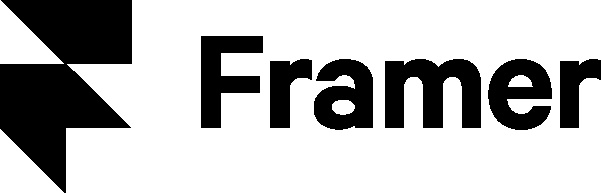
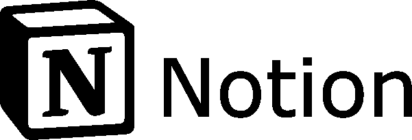
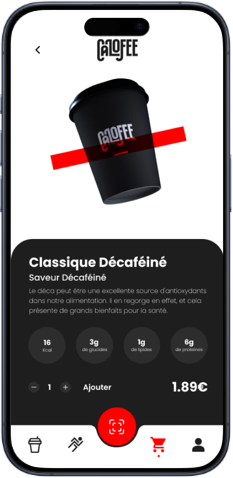

Une exploration

Explorez mon univers visuel où l'imagination prend vie. Plongez dans l'art du design graphique, où chaque pixel que je pose dévoile une histoire unique.






Ui/Ux Design
Conception d'interfaces utilisateur UI et développement d'expériences utilisateur UX intuitives. Une approche axée sur l'utilisateur, couplée à une attention méticuleuse aux détails, permet de créer des produits numériques à la fois esthétiques et faciles à utiliser.

Site web no code
Développement de sites web sans nécessité de programmation, proposant des solutions novatrices et pratiques sans demander de compétences techniques avancées. Utilisation d'outils de création de sites web sans code pour concrétiser rapidement et avec souplesse les visions des clients.


Design Graphique
Une passion pour l'esthétique visuelle et un maîtrise de l'art du design graphique. Créations uniques et percutantes qui attirent l'attention, communiquent des messages de manière efficace et renforcent l'identité de marque des clients.